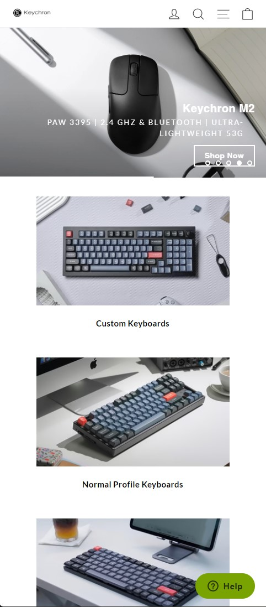
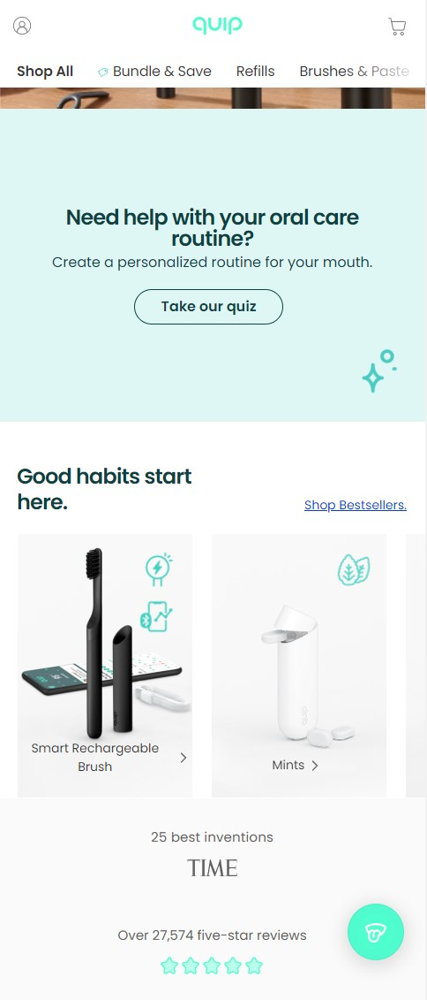
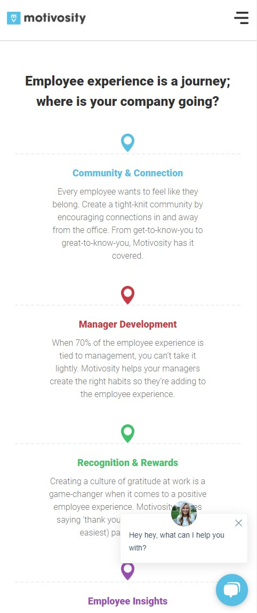

Keychron
Fitt's Law
Check out site! Fritt's law deals with making things easily clikable or selectable for the user. In this case on Keychron's site they have different options for keyboards for users to check out. There are big and selectable images that you can press super easily especially in a mobile position. The images are easily reachable with your thumb making it easy to navigate to those other keyboard pages.
Quip
White Space and Clean Design
Check out site! On Quip's site you can see a clean simple design which matches the theme of their dental products. Which are also products designed to be very clean and simple designs. They use white space well especially in the "Need help with your oral care routine?" section. Simple text in the middle with enough space on the sides to give it breathing room.
Motivosity
Proximity
Check out site! I like the use of proximity used on the Motivosity page. You can see a whole section that groups 3 items with proximity perfectly. You can tell which content belongs with each title. They even section it off with different colors to help us see that the first group is stuff related with this blue item. And the title, paragraph, and icon are all grouped together.